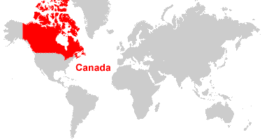
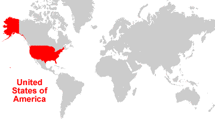
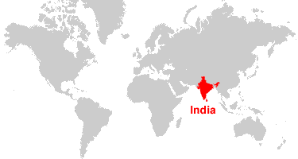

Države sa najviše teritorije
Prema podacima Vikipedije, na svetu postoji 195 suverenih država (i još 20 onih čija je suverenost ili sporna ili su delimično priznate ili nenaseljene), a sve se razlikuju po ukupnoj površini. Srbija je na 111. mestu, a koje su to države na listi 10 najvećih, pročitajte u narednom tekstu.

Rusija
Rusija je definitivno prva na listi. Prostire se na površini od 17.098.246 km2 i to na dva kontinenta, Evropi i Aziji. Rusija prolazi kroz čak 9 vremenskih zona. Na 8. je mestu po nenaseljenoj zemljišnoj površini, a na 9. na osnovu broja stanovnika. Glavni grad Rusije je Moskva.
Kanada
Kanada je druga po površini zemlja u svetu, a prostire se na 9.984.670 km2. Ukoliko uzmemo u obzir količinu vode u Kanadi, ovo je zemlja koja zauzima 1. mesto, jer sadrži 8.93% ukupnih svetskih vodenih površina. Kanada prekriva severni deo zapadne hemisfere, a glavni grad je Otava. Najveći grad je Toronto.

Kina
Kina se prostire na površini od 9.572.900 km2, a najveća je zemlja na Azijskom kontinentu. No, kada se u obzir uzme broj stanovnika, Kina je, na osnovu tog parametra, 1. na svetu. Glavni grad Kine je Peking.
Sjedinjene Američke Države
SAD su na 4. mestu. Amerika se prostire na površini od 9.525.067 km2, i samo za nijansu je manja od Kine. SAD su poznate kao vodeća vojna svetska sila. Glavni grad SAD-a je Vašington, najveći je Njujork, a najstariji je Boston.

Brazil
Brazil je po površini najveća zemlja u Južnoj Americi, a drži 5. mesto na celoj planeti. Površina Brazila je 515.767 km². Glavni grad je Brazilija, a najveći Sao Paolo.
Australija
Australija je najveća zemlja u Okeaniji, a sa površinom od 692.024 km2. Australija je jedna od vodećih zemalja na svetu po kvalitetu života njenih stanovnika, iako vodi na listi zemalja sa najvećim brojem smrtonosnih životinja. To je najveća zemlja bez kopnene granice. Glavni grad je Sidnej.

Indija
Indija je duplo manja od Australije, prostire se na 3.287.263 km2, a 2. je na listi zemalja sveta po broju stanovnika, dok je 3. po veličini u Aziji. Glavni grad je Nju Delhi. Indija spada u jednu od najstarijih zemalja na svetu.

Argentina
Argentina se prostire na 2.780.400 km2, glavni grad je Buenos Aires, a vodi na listi najvećeg broja govornika španskog jezika u svetu.
Kazahstan
Kazahstan leži na površini od 2.724.900 km2, mada je veliki deo njegove teritorije nenaseljen i čini ga stepa. Glavni grad Kazahstana je Astana, međutim Alma Ata je najveći (do 1997. godine je bio glavni). Kaazahstan je najveća zemlja okružena kopnom.
Alžir
Alžir je najveća zemlja u Africi, a deseta u svetu, na površini od 2.381.741 km2, a 90% Alžiraca živi na severu i u priobalju. Ostatak čini pustinja u kojoj žive beduini.